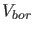
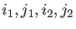
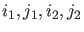

It is possible to adapt the problem while generating the Hopf curve.
This call updates the auxiliary variables used in the defining system of the computed branch. The bordering
matrices  and  may require updating since they must at least be such that the matrix in (62) is nonsingular. Updating
of and is done exactly as in the LP case.
Updating of
 is done in such a way that the linearized system of (61) is
as well-conditioned as possible.
may require updating since they must at least be such that the matrix in (62) is nonsingular. Updating
of and is done exactly as in the LP case.
Updating of
 is done in such a way that the linearized system of (61) is
as well-conditioned as possible.